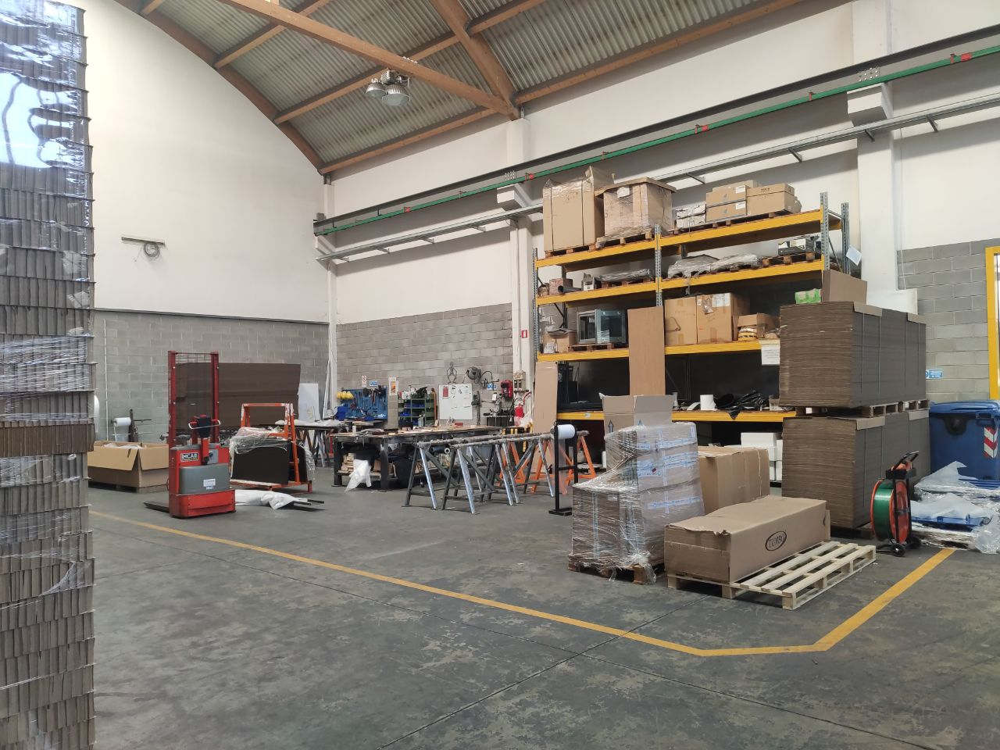
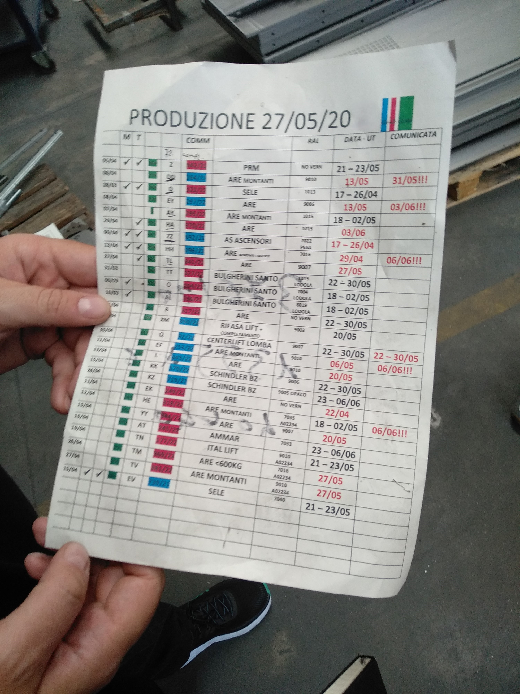
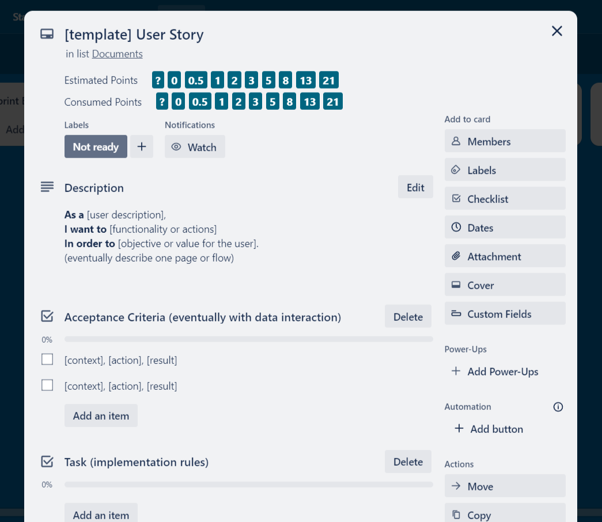
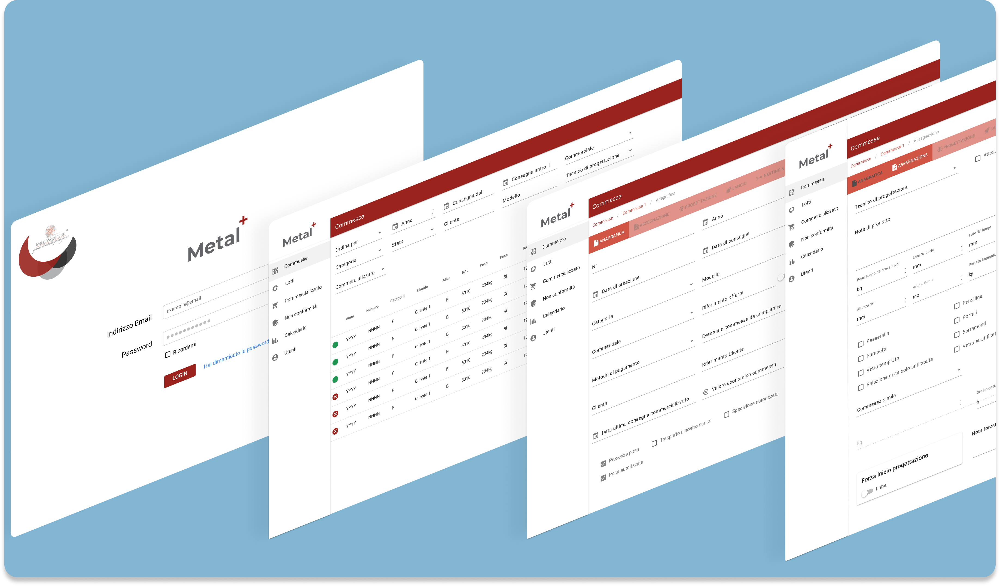

Following a previous innovation project in which I designed and proposed innovative solutions for companies during the 2020 pandemic, I was asked to take the role of Product owner in the actual development of the project.
During this period I worked as an external consultant in a full-remote agile team for the development of custom web applications.
Problem definition
Since the beginning of the 2020 pandemic, it became clear that digital transformation and business process
optimization was extremely important, in order to adapt to the new situation.
For this reason, I collaborated with Trentino Sviluppo in redesigning the internal
processes of the companies located in their innovation centre, supporting them in a digital transition.
After a first phase of discovery and discussion with the companies, it became clear that the main pain point was the need of a digital tool that would track and orchestrate the production line of the companies.
From there I was asked to move forward the project and actively lead a professional scrum team, set up by Trilogy srl, in the actual realisation of the digital product for Metalworking srl.
Requisites and research
Skills and tools applied
User interviews
Personas
Journey map
We started the project by examining and researching the company's processes and user pain points.
This was done by visits to the production site, interviews with employees and mapping key flows and documentation of the business.
As a first action we inspected the actual production line with the help of the business owners to get a deeper understanding and a first hand look at the company.
Through these visits we gathered material to help us define a streamlined model of the internal processes.
This would also prove important in order to have a direct contact with the potential users of our application.

A production step of the company
We started outlining the various parts in a flow diagram and identified a total of 12 production steps.
This helped track the necessary data in every step, the actions required by the operators and potential improvements and optimization of the overall flow.

Line documentation, to be digitized and integrated in the the Web app
Following this action we planned a set of interviews, involving most of the employees of the company. This in order to get the main pain points they were facing with the former process and, potentially, point out potential opportunities of improvement.
At the end of this two weeks period of interviews, we analysed the transcripts and documentation gathered and isolated the main personas that would be the target for the product.
 The three main personas identified: Technical engineer, Production worker and Line manager
The crucial pain points that emerged were focused around:
The three main personas identified: Technical engineer, Production worker and Line manager
The crucial pain points that emerged were focused around:
- lack of communication between line steps
- improve consistency of documentation
- provide support for quality assurance
After a serie of reviews with the stakeholders, where we outlined the proposed solution and findings, we got green light to procede with the planning of development activities.
Backlog definition
Skills and tools applied
As for the planning phase, I set out with the scrum team to define the product backlog in terms of user stories and epics necessaries.
In this stage we also involved two main stakeholder of the company, in order to get direct feedbacks of the specifications and assure a shared understanding of the future developments.
Trello was the tool of choice for keeping track of requirements.
Each user story would follow a base template to keep consistency and simplify the review and acceptance process.
I would also write acceptance criteria, shared with the company stakeholders, to guide the internal reviews during which we would show the progress and completed tasks.
Each story would then be weighted by the developers and organised in the product backlog according to its priority in terms of value for the company.

A user story template we used
Based on the characteristics of each user story we also outlined several groups of functionalities that our product would have covered:
Users authentication, Production line steps, Users management, Manufactures database, Filters and dashboards
These would form our set of epics with which organise our product backlog and development phase.
The final product was a backlog of around 100 user stories, organised by priority, weighted and approved with the company stakeholders.
Prototypes and development
Skills and tools applied
Sprint
Performance metrics
Figma
Prototypes
The development phase was structured in sprints with the duration of two weeks.
Following scrum framework, we would convene on a sprint goal for each sprint and define user stories to be completed.
We held daily updates internal to the development team to track potential issues or blockers, while I as the product owner, had meetings with the stakeholders twice per week
This organization helped us keep a lean communication between all the parties involved.
At the end of the sprint, we held one internal review with the development team in a test environment, to check everything together and prepare a review with the company.
The official sprint review would be held the last day of the sprint, where we presented the stakeholders with the progress and user stories completed.
As a measure of completeness we would follow the Acceptance Criteria in each story, this helped us align the expectations of all the parties involved.
Once the sprint was completed each user story that passed the review would be pushed to the production environment, where the company could start interact with the final product.
As conclusion of the sprint we held a retrospective guided by the scrum master to outline potential improvements or blockers inside the team.
We would also plan a first draft of the following sprint to be shared with the stakeholders of the company.
The overall progress of the development phase was tracked through metrics using mainly burndown charts. This was a tool for our team to always refer to, both to evaluate our efforts and maintain our commitment to the customer.
 While working as the
While working as the Product owner I would also follow the design of user interfaces, helping the UI designer of the team.
Together we would take user requirements and elaborate Figma prototypes to be shared with the users.
For each story requiring a user interface, we would set up a serie of tests with the users in order to gather direct feedbacks.
These interfaces would then be attached to the user story and drive the development team in the realization of the Front-end. In terms of Palette and Fonts we followed the guidelines of the company's brand.

Mockups of the user interfaces
Feedbacks and user testing
Skills and tools applied
Usability tests
Feedback tracking
The entire development phase took around 10 months. Once the majority of the features were released we started implementing a feedback system for additional improvements and evaluating usability.
As for tracking requests, bugs and improvements we used various tools such as ybug, hotjar and user tests.
For this task, we involved specific users in different sectors of the company. With them we planned a serie of usability tests of their activities and tracked how much time would take them to complete.
In the subsequent releases we tried to optimize those metrics and increase the overall productivity of the users in their operations.
The project was completed on schedule in 12 months, delivering a new information system that helped the company document and track the activities in the production line.
From there the company asked us to extend the project in order to integrate other parts of their information system in our solution, such as customers orders and external purchases.